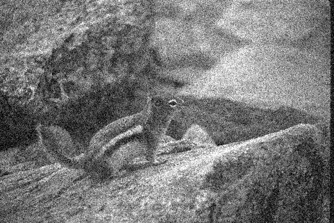
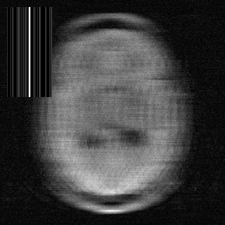
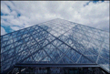
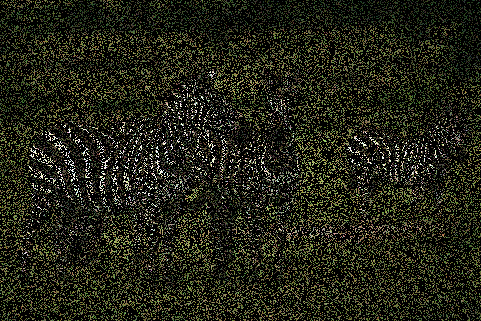
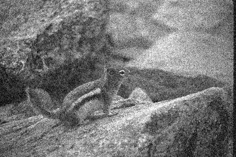
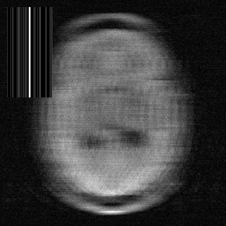
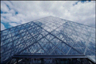
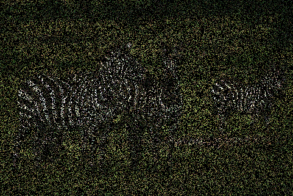

Abstract
Most existing learning-based methods for solving imaging inverse problems can be roughly divided into two classes: iterative algorithms, such as plug-and-play and diffusion methods, that leverage pretrained denoisers, and unrolled architectures that are trained end-to-end for specific imaging problems. Iterative methods in the first class are computationally costly and often provide suboptimal reconstruction performance, whereas unrolled architectures are generally specific to a single inverse problem and require expensive training. In this work, we propose a novel non-iterative, lightweight architecture that incorporates knowledge about the forward operator (acquisition physics and noise parameters) without relying on unrolling. Our model is trained to solve a wide range of inverse problems beyond denoising, including deblurring, magnetic resonance imaging, computed tomography, inpainting, and super-resolution. The proposed model can be easily adapted to unseen inverse problems or datasets with a few fine-tuning steps (up to a few images) in a self-supervised way, without ground-truth references. Throughout a series of experiments, we demonstrate state-of-the-art performance from medical imaging to low-photon imaging and microscopy.
Architecture Overview
Our architecture builds on DRUNet and is designed to solve general inverse problems with a single model. We introduce a proximal estimation module to robustly initialize the inverse solution using a closed-form proximal step tuned to the noise level. A Krylov Subspace Module (KSM) conditions on the forward operator by learning combinations of iterated gradients and adjoints, mimicking unrolled solvers without the need for iteration. To address scale sensitivity, we include multiscale operator conditioning, which performs physics-aware reasoning on coarse grids to improve stability and reduce computational cost. Our design also incorporates explicit noise conditioning for both Gaussian and Poisson-Gaussian noise models, enabling strong generalization across noise levels. Finally, we introduce modality-adaptive layers for color, grayscale, and complex data, while keeping the majority of network weights shared across tasks.

Figure: Overview of our proposed RAM architecture.
Training Strategy
We train RAM simultaneously on multiple computational imaging tasks, including deblurring, inpainting, Poisson-Gaussian denoising (both grayscale and color), single-coil MRI, and CT reconstruction. These tasks are implemented using the DeepInverse library, which provides a unified framework for inverse problems.
Each task \( g \) is associated with a dataset \( \mathcal{D}_g = \{ \mathbf{x}_{i,g} \} \). For natural images, we use LSDIR; for CT, the LIDC-IDRI dataset; and for MRI, the fastMRI brain multicoil subset.
All tasks are formulated as inverse problems under a Poisson-Gaussian noise model, parameterized by gain \( \gamma \geq 0 \) and Gaussian standard deviation \( \sigma \geq 0 \). For each task \( g \), we minimize a task-specific expected loss:
\[ \mathcal{L}_g(\theta, \mathbf{x}_{i,g}) = \mathbb{E}_{(\sigma, \gamma)} \mathbb{E}_{\mathbf{y} | \mathbf{x}} \, \omega_g \left\| \mathcal{R}_\theta(\mathbf{y}, A_g, \sigma, \gamma) - \mathbf{x}_{i,g} \right\|_1 \]
Here, \( \mathcal{R}_\theta \) is the RAM model, \( A_g \) is the forward operator for task \( g \), and the weighting term \( \omega_g = \| A_g^\top \mathbf{y} \| / \sigma \) balances the contribution of each task and noise level. We choose an \( \ell_1 \) loss for better generalization, consistent with prior findings.
The overall loss is a sum over all tasks:
\[ \mathcal{L}(\theta) = \sum_{g=1}^{G} \sum_{i=1}^{N_g} \mathcal{L}_g(\theta, \mathbf{x}_{i,g}) \]
This formulation enables RAM to generalize across imaging modalities and degradation types, while remaining compact and non-iterative.
Self-Supervised Fine-Tuning
In many real-world scenarios, the measurement operator \( A \) is not known during training, or ground-truth reference images are unavailable. In these cases, our pretrained RAM model can be adapted using only observed measurement data, leveraging recent advances in self-supervised learning for inverse problems.
Given a set of noisy or incomplete observations \( \{ \mathbf{y}_1, \dots, \mathbf{y}_N \} \), we fine-tune RAM using a self-supervised loss:
\[ \mathcal{L}(\theta) = \sum_{i=1}^{N} \mathcal{L}_{\text{MC}}(\theta, \mathbf{y}_i) + \omega \, \mathcal{L}_{\text{NULL}}(\theta, \mathbf{y}_i) \]
The first term enforces measurement consistency \( A \hat{\mathbf{x}} \approx A \mathbf{x} \) while remaining robust to noise. Since no groundtruth \(x\) is available in this case, we leverage Stein's Unbiased Risk Estimator (SURE). For the second term regularizing the nullspace of the forward model where no direct information is available, we leverage equivariance arguments Imaging. The trade-off between these terms is controlled by the regularization parameter \( \omega \).
This self-supervised procedure enables RAM to adapt to new imaging domains without requiring clean targets or retraining from scratch.
Please refer to our paper for full details.
Results on training tasks
We show below visual results on tasks seen during training.
 







Visual Results on out-of-distribution tasks
RAM can be applied to problems other than those from the training set.